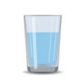

100% of your donation funds clean water projects: track every dollar, follow every story, and be part of real, lasting change.

1 Donation
Yesterday
1 Donation
7 days ago
1 Donation
35 days agoProject 21 of 22
$7668.55 of $10000